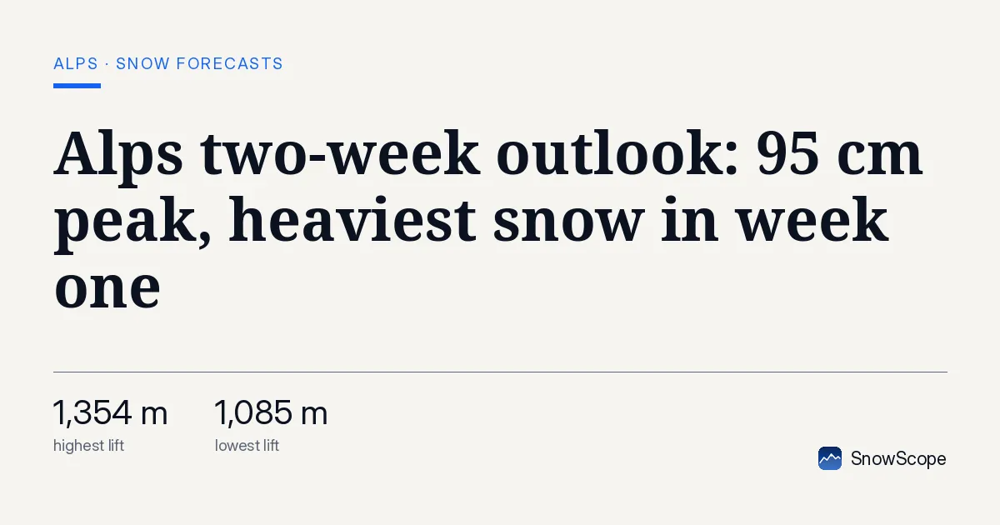
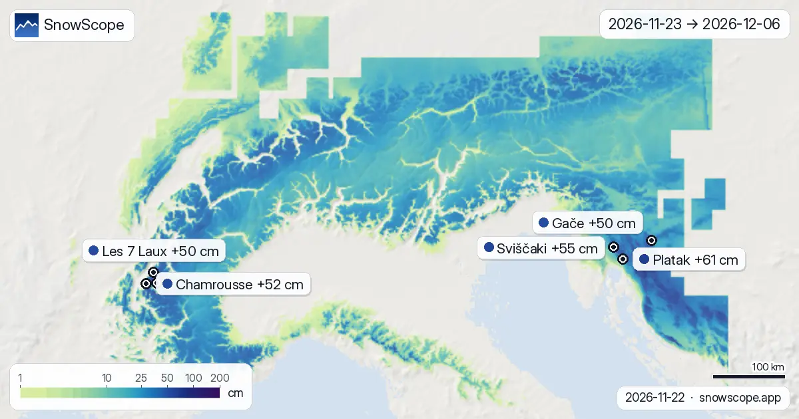
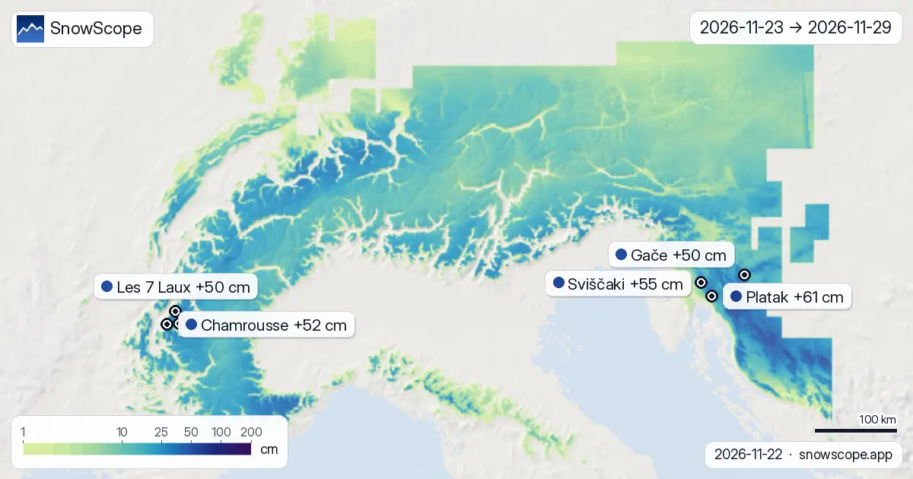
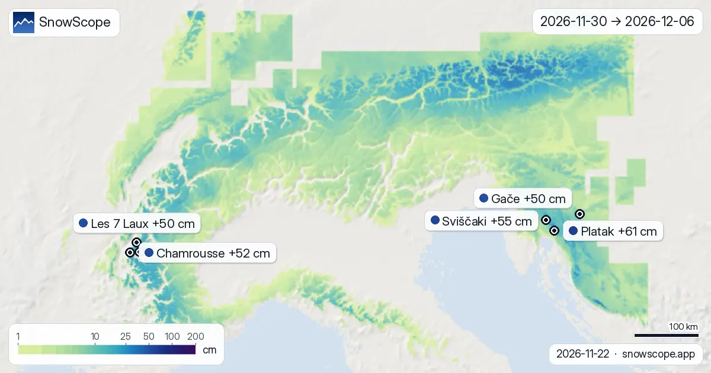

Alps two-week outlook: 95 cm peak, heaviest snow in week one
Heavy snow is on the way across the Alps, with the first week bringing most of the water. November 25 will be the snowiest day for many resorts, followed by a quieter period in early December.
See the live snow forecast for Platak in the SnowScope appSnow depth, powder alerts and the 3D map, free.
When and where the snow arrives
SnowScope, run from two weather forecasts, shows 95 cm of new snow is likely across the Alps over the next 14 days. The first week (23 to 29 November) will capture 63% of that total. November 25 is the standout day: Saint Grée di Viola will record up to 31 cm, while Alpe d'Huez Grand Domaine and Chamrousse will each see around 20 cm. Platak and Sviščaki will also pick up significant totals on that day.
The second week (30 November to 6 December) will be much quieter. Most days will bring little or no snow until early December, when a second weaker system moves in. Early December 4 to 5 may add 10 to 15 cm at higher altitudes, but confidence in timing is lower than for the first system.
| Resort | Snow depth | New snow, 72 h | Coming, next days | Top |
|---|---|---|---|---|
| Platak | 3 cm | 4 cm | 8 cm | 1,354 m |
| Sviščaki | 5 cm | 9 cm | 10 cm | 1,305 m |
| Chamrousse | 51 cm | 86 cm | 42 cm | 2,246 m |
| Alpe d'Huez Grand Domaine | 125 cm | 123 cm | 57 cm | 3,306 m |
| Gače | 0 cm | 1 cm | 10 cm | 964 m |
| Les 7 Laux | 57 cm | 103 cm | 43 cm | 2,372 m |

Snow by elevation: best above 1500 metres
Height matters strongly. Terrain between 1500 and 2000 metres will see 23 cm of new snow on average over the two weeks; above 3000 metres, the median is 23 cm as well. Lower slopes, below 1500 metres, will receive only 19 cm. Early in the season, thin snow on lower ground means rocks and vegetation break through easily. Wait for the higher terrain to build depth.
About 83,200 square km of Alpine terrain will collect 20 cm or more over the two weeks. Only 2,369 square km will reach 50 cm or more. This means water will be scattered widely but not concentrated in deep pockets.

Mountain water and runoff
From a hydrological view, this snow will charge Alpine catchments gradually. The first system on November 25 will produce a pulse of melt or immediate runoff if temperatures stay high at lower elevations. Mid-mountain zones between 1500 and 2500 metres should retain most of the snow as stored water. At 2500 to 3000 metres, all precipitation will stay as snow.
1153 of the 1204 tracked resorts will have snow cover by November 25. Ski areas above 2000 metres will have the best conditions because melt loss will be slowest. The second week's lighter snow will add to reserves but only where the first system already created a foundation.

Watch for early-season risks
Thin snow at the start of a season hides hazards. Even after 95 cm falls over two weeks, mid-mountain slopes below 1500 metres may still have bare ground in sunny spots or rocks under new cover. At Gače in Slovenia, today only 0 cm lies on the upper slopes; even after the November 25 event, depth will remain marginal. Use the official avalanche forecast for any off-piste travel, and remember that layering of old and new snow can create stability issues early on.
Tips for skiers
- Aim for slopes above 1500 metres on November 25 for the most reliable snow. Lower resorts like Gače and Platak will see fresh cover but expect variable depth.
- The second week is dry for most of the Alps. Plan long-range travel before 30 November if snow is your priority.
- Terrain above 2500 metres will hold all snow as frozen reserves. Consider high-altitude resorts if you are skiing after November 25.
- Watch the official avalanche bulletin before going off-piste. New snow on a thin base can be unstable.
- Resorts in France (Chamrousse, Alpe d'Huez Grand Domaine, Les 7 Laux) already have better base depths today (51–125 cm). Eastern Alps resorts (Platak, Sviščaki) will benefit most from the November 25 influx.
About these numbers
Resort snow depths are the deepest snow on the resort's upper slopes on the date shown; they are estimates for an area, not a measurement at one point. Forecasts can change. Always read the official avalanche bulletin before going off-piste.
Official avalanche bulletins: EAWS (Alps)
Cite this report
For research, teaching or the press: the numbers and charts are free to reuse under CC BY 4.0 with this citation.
SnowScope (2026), Alps two-week outlook: 95 cm peak, heaviest snow in week one, https://snowscope.app/blog/en/2026/11/alps-2-week-snow-forecast-maps-22-november-2026.html, accessed 2026-11-22
SnowScope (Atlas Labs). (2026, November 22). Alps two-week outlook: 95 cm peak, heaviest snow in week one. SnowScope snow reports. https://snowscope.app/blog/en/2026/11/alps-2-week-snow-forecast-maps-22-november-2026.html
BibTeX
@misc{snowscope2026alps2weeksnowforecastmap,
author = {{SnowScope (Atlas Labs)}},
title = {Alps two-week outlook: 95 cm peak, heaviest snow in week one},
year = {2026},
month = nov,
howpublished = {\url{https://snowscope.app/blog/en/2026/11/alps-2-week-snow-forecast-maps-22-november-2026.html}},
note = {Published 2026-11-22 12:21 UTC; accessed 2026-11-22}
}· CC BY 4.0 · Methods, data and tools →
Platak: snow and temperature by height, this winter vs last (tools) →
Follow Platak
Free: a message when fresh snow is coming, and the forecast every morning.
More snow reports

Alpe d'Huez faces the sun. How to plan a day by the clock and by height, with the snow of 46 past winters from the low villages to Pic Blanc.

Alpe d'Huez Grand Domaine today: snow depth 92 cm (Alps, 21 November). Alps snow report, 21 November. Orelle (France) has the deepest snow in the …

Alpe d'Huez Grand Domaine fresh snow report: 106 cm in 72 hours (Alps, 23 November). Height matters: at Le Reposoir Chalet Neuf, SnowScope shows …